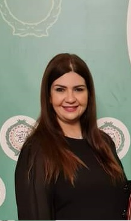

NAME:Ghada ElBadawy

Ghada ElBadawy
Lecturer
Experienced, Passionate and dedicated lecturer with 15 years of experience
developing and implementing diverse curriculums covering wide range of subjects.
Highly skilled at motivating students through positive encouragement and
reinforcement of concepts via interactive classroom instruction and observation.
Equipped with extensive background in versatile education environments. Studentcentric instructor, academic facilitator and motivational coach. Competent at
performing independently or as member of teaching team. Well-versed in classroom
and online technologies. Committed to enhancing overall student success by
maintaining productive relationships with students and parents. Knowledgeable
instructor with strong understanding of teaching:
· Modern Management
· The Essentials of Entrepreneurship and Small Business
· Strategic Management
· Human Resources Management
· Managerial Policies and Organization Development
· Public Administration
· Knowledge Management
· Organizational Behavior
· International Business
· Business Administration
Skills
Entrepreneurship expertise
Managerial skills
Effective managerial techniques
Lesson Planning
Curriculum Development
Classroom technology
Experiential learning
Classroom management
(1A) Road 200- Degla Maadi Cairo,
Egypt
01068831681
fafaghouki@gmail.com
https://www.linkedin.com/in/ghadaahmed-09282816aTeam building
Communications
Problem resolution
Group and individual instruction
Student engagement
Learner assessment
Work History
2020-02 - Current Entrepreneurship E-Club Manager
Egyptian Chinese University (ECU), Cairo, Egypt
Organizing two students entrepreneurship competitions annually: Ideation
Camp.
Organizing an entrepreneurship week at the university.
The presence of representatives of the Entrepreneurship Club in all colleges.
+
Helping the most Qualifying teams to apply to a technology incubator.
Inviting a distinguished public figure in the field of startups and
entrepreneurship to give lectures at the university.
Establish a training camp for Design Thinking training.
Enhancing the entrepreneurial capabilities of students to find
entrepreneurial ideas for future projects.
Building a culture of entrepreneurship and developing the capabilities of
entrepreneurs to enable them to successfully establish and manage small
enterprises.
Creating a generation of entrepreneurs capable of finding investment
opportunities for themselves and others.
Providing semi-industrial prototypes that help the smooth transition of ideas
from basic research into developing and marketing products.
Promote and spread the culture of innovation among all ECU students.
Motivating the inventors and innovators and investing in their innovations
and talents with the purpose of converting them to economic products.
2019-07 - Current Project Coordinator - Finnish HEI- ICI Program
Egyptian Chinese University (ECU), Cairo, Egypt
Transitioned projects from estimation and pre-construction phase to
well-defined project execution plan.
Planned and arranged meetings with external organizations and
individuals, enabling all parties to meet and discuss project progress.
Built strong relationships with internal and external stakeholders and devised
strategies, initiatives, and events promoting products and services.
2019-02 - Current Lecturer of Business Administration
Egyptian Chinese University (ECU), Cairo, Egypt
Prepared course materials such as syllabus, assignments,activities and
handouts.
Evaluated and graded class attendance, assignments, and papers.
Prepared quizzes, tests and examinations to gauge how well students werelearning.
Instructed up to 600 students individually and in groups on Modern
Management and Organizational Behavior subjects.
Instructed up to 300 students individually and in groups on Entrepreneurship
and Small Business Course.
Scheduled 6 hours per week to provide academic support and tutoring to
struggling students.
Assisted students of all ability levels develop life-long learning skills and
good study habits.
Worked with staff members to design comprehensive and individualized
plans to optimize student education.
Shifted between formal and informal methods of teaching to keep students
interested, including debates, practical activities and experiments.
Communicated frequently with parents, students and faculty to provide
feedback and discuss instructional strategies.
Enhanced student learning by optimizing wide range of instructional
approaches and innovative classroom activities.
Kept students on-task with proactive behavior modification and positive
reinforcement strategies.
Created and developed lesson plans according to students' academic
needs, including both group and individual work.
Participated in department meetings to provide input to colleagues about
student achievement and improvement.
Fostered student curiosity and interest through creative hands-on activities.
Observed and evaluated students' performance, behavior, social
development.
2019-02 - Current Part Time Lecturer of Business Administration
AAST. (English And French Section), Cairo, Egypt
2016-10 - 2018-12 Lecturer of Business Administration
Modern Academy For Computer Sciences & Management, Cairo, Egypt
Prepared course materials such as syllabus, assignments,activities and
handouts.
Evaluated and graded class attendance, assignments, and papers.
Prepared quizzes, tests and examinations to gauge how well students were
learning.
Instructed up to 650 students on Principles of Management & Organization.
Scheduled 6 hours per week to provide academic support and tutoring to
struggling students.
Assisted students of all ability levels develop life-long learning skills and
good study habits.
Worked with staff members to design comprehensive and individualized
plans to optimize student education.
Shifted between formal and informal methods of teaching to keep students
interested, including debates, practical activities and experiments.
Communicated frequently with parents, students and faculty to provide
feedback and discuss instructional strategies.
Enhanced student learning by optimizing wide range of instructionalapproaches and innovative classroom activities.
Kept students on-task with proactive behavior modification and positive
reinforcement strategies.
Created and developed lesson plans according to students' academic
needs, including both group and individual work.
Participated in department meetings to provide input to colleagues about
student achievement and improvement.
Fostered student curiosity and interest through creative hands-on activities.
Observed and evaluated students' performance, behavior, social
development.
2007-09 - 2016-09 Assistant Lecturer
Modern Academy For Computer Sciences & Management, Cairo, Egypt
Initiated and facilitated classroom discussions.
Reviewed teaching activities and identified and implemented strategies to
improve student learning outcomes.
Participated in weekly faculty meetings and contributed to curriculum
review.
Developed easy and open rapport with students to encourage
engagement and academic progress.
Supported positive image of university by being responsive and promptly
responding to requests and inquiries.
Met with students during and after office hours to address concerns and
offer feedback. and resolve students' behavioral and academic issues.
Shifted between formal and informal methods of teaching to keep students
interested, including debates, practical activities and experiments.
2005-09 - 2007-09 Teaching Assistant
Modern Academy For Computer Sciences & Management, Cairo, Egypt
Education
2000-09 - 2004-05 Political Science
Faculty Of Economics And Political Sciences - Cairo University
B.Sc. Degree: Major in political Science (French Section), Minor in
Computational Socio.
Graduation Project: The problem of South Sudan: "The Role of U.S.A in the
Mashakus Treaty."
2005-04 - 2007-09 M.D.: Public Administration
AAST. - Cairo
2010-09 - 2016-10 Ph.D.: Public Administration
Sadat Academy For Management Sciences (SAMS) - Cairo
Languages
Arabic
French
EnglishCertifications
2020-02 International Certified in Entrepreneurship - Faculty Development Program in
Entrepreneurship Education – Wadwhani Foundation
2019-09 Strategy and National Security - Nasser Military Academy
2019-10 Crisis Management - Nasser Military Academy
2019-11 Decision Making- Nasser Military Academy
2001-10 DELF First Degree (A1, A2, A3, A4), the French Embassy in Cairo, (French
Center for culture and Cooperation)
1999-04 Alliance - French Language Diploma
2010-09 TOEFl, Sadat Academy for Management Sciences (SAMS)
2011-12 ICDL Certificate
Interests
Volunteer Work/Community Involvement.
Reading
Travelling
Attending Scientific Conferences
Additional Information
PREVIOUS TRAINING
Employer: Al- Ahram Strategic Center
Job Title: Political Researcher
From: July 2003 To: August 2003
Employer: CEDEJ, Cairo, Egypt.
Job Title: Political Researcher
From: July 2002 To: August 2002
Employer: Radio and Television Union (Radio News Section), Cairo, Egypt.
Job Title: News Translator (From Arabic to French)
From: July 2001 To: August 2001
FORUMS:
- The World Youth Forum in Sharm ElSheik 2018
- Egypt Economic Forum: Smart Vision 10th annual summit March 2018.
- The World Youth Forum in Sharm ElSheik 2019